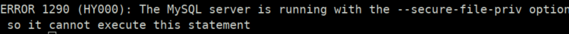
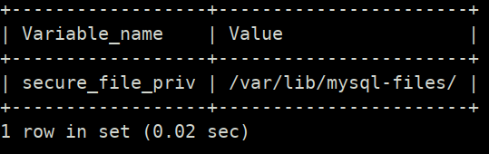
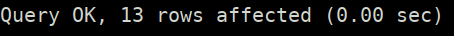

Outfile function
mysql> select * from users into outfile 'tests.txt';
Output:

If you find this error, you have to see where you can write.
From: https://stackoverflow.com/questions/31951468/error-code-1290-the-mysql-server-is-running-with-the-secure-file-priv-option
mysql> SHOW VARIABLES LIKE "secure_file_priv";
Output:

Then run again the “outfile” function with the path value..
mysql> select * from users into outfile '/var/lib/mysql-files/tests.txt';
Output:

The response is saved in that file.